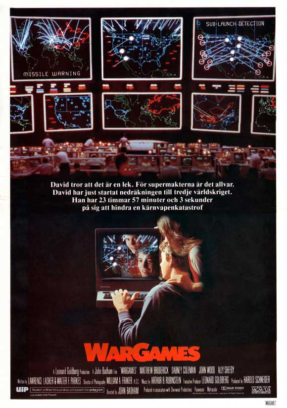

Computadoras Hogareñas
Introducción
- "Triumph of the Nerds: The Rise of Accidental Empires" (documental) (Parte 1)
- "Fire in the Valley: The Making of The Personal Computer" (libro)
- "Hackers: Heroes of the Computer Revolution"(libro) (Parte 2)
Introducción

En la película War Games (1983), en el minuto 20,
el protagonista utiliza una IMSAI 8080 con sus periféricos incluyendo discos flexibles de 8" y un
módem telefónico.
Computadoras "Argentinas"
Durante los 80, en Argentina existían leyes que hacían prohibitiva la importación de computadoras.
Varias empresas locales consiguieron derechos de los fabricantes extranjeros y comenzaron a importar las piezas para ensamblarlas en el país.
Fabricantes locales
Czerweny (fabricante de motores eléctricos) fabricó clones de Sinclair ZX-81 y TS-1500 y versiones locales de la Spectrum y Spectrum+.
Skydata importaba la línea Atari y se limitaba a adaptar la salida de video a PAL-N.
Fabricantes locales (cont.)
Talent (fábrica de electrodomésticos) ensamblaba computadoras MSX y MSX2 Daewoo, agregándoles un circuito para adaptarlas a PAL-N.
Texas Instruments, ensamblaba la TI-99/4A PAL idéntica a la vendida en Europa excepto por el modulador externo específico para PAL-N.
Fabricantes locales (cont.)
Drean era una compañía que fabricaba lavarropas y otros electrodomésticos. Comenzando en 1985, Drean tuvo la licencia sobre los productos Commodore que ensamblara en el país.
Adaptó y ensambló en el país clones de las Commodore 16, 64, 64C y 128.
Revista "Lúpin"
Revista de historietas publicada mensualmente desde 1966 hasta 2007. Formato apaisado, popular en la época (Patoruzú, Isidoro, etc).
Además incluía planos de aeromodelos y electrónica, ideas para Boyscouts, programas de microcomputadoras.
Portada Lúpin (Feb. 1986)
Drean Commodore 64/64C
Ensamblada bajo licencia de Commodore USA en San Luis (o_o) en los años 1985-1987.
Usaba las mismas system boards pero con un chip de video PAL-N y una fuente de 220V armada en el país.
La carcasa (y algunos de los teclados) eran fabricados en el país.
Imagen Commodore 64
Especificaciones
| Procesador | MOS Technology 6510/8500 |
| Memoria | RAM: 64kB, Video: 512B, ROM: 20kB (BASIC 2.0) |
| E/S | Puerto serie RS232C, Puerto serie IEC, Puerto serie C2N (para datasette), Video compuesto y audio, Salida RF para TV, Bus de expansión, 2 conectores joystick. |
C64 y periféricos
Conectores C64
Unidad de Datassette
Unidad de Disco 1541
Drean Commodore 64C
Demo Commodore BASIC
Demo Juegos C64
Demo GEOS Drean C64
Drean Commodore 128
Presentada en Septiembre de 1987 esta no era más que una Commodore 128 NTSC, además de la caja y manuales correspondientes en español.
Imagen Commodore 128
Especificaciones
| Procesadores | MOS 8502 y Zilog Z-80 |
| Memoria | RAM: 128kB (16kB video), ROM: 80kB (BASIC y Z80 Boot ROM) |
| E/S | Puerto serie RS232C, IEC y C2N (para datasette), Video compuesto y audio, Salida RF para TV, Monitor EGA, Bus de expansión, joysticks. |
Talent DPC-200
Adaptación de la Daewo CPC-200, fabricada en San Luis (Argentina) en los años 1986-1987.
Se fabricaron dos versiones una bajo licencia de Daewo y la otra no.
Imagen Talent Daewo
Kit Especial Talent MSX
Especificaciones
| Procesador | Z80A Goldstar (GSS Z8400A PS) o SGS (Z8400AB1) |
| Memoria | RAM: 64kB, VIDEO: 16kB |
| E/S | Salida RF, Sonido Analógico, Video Compuesto, Puerto Paralelo Centronics, Lector de Cintas, Dos puertos para (joysticks MSX, mouse, etc.), Puerto de cartuchos, Slot de expansión. |
Detalle atrás
Detalle lateral
Demo de uso
Talent TPC-310
Computadora MSX2 diseñada y construida completamente por Telemática/Talent, fabricada en los años 1987-1989.
Imagen Talent TPC-310
Especificaciones
| Procesadores | Z80A Goldstar (Z8400AB1) y un Motor MSX S1985 de Yamaha |
| Memoria | RAM: 128kB, VIDEO: 128kB |
| E/S | Salida RF, Sonido Analógico, Video Compuesto, Puerto Paralelo Centronics, Lector de Cintas, Dos puertos para (joysticks MSX, mouse, etc.), Puerto de cartuchos, Slot de expansión. |
Detalle atrás
Detalle lateral
Demo de uso
Más Información
- "Historia de la Computación Hogareña en la Argentina". (paper)
- "Computadoras argentinas, electrónica vintage". (blog)
Gracias!
https://sofrcu.github.io/